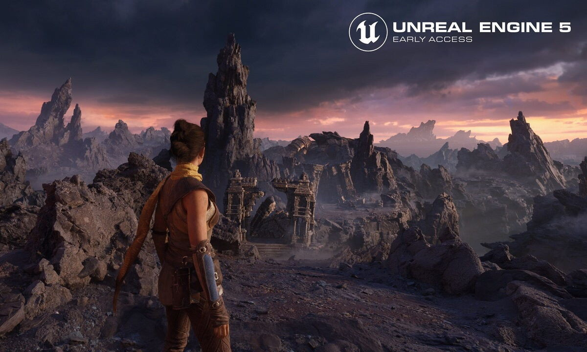
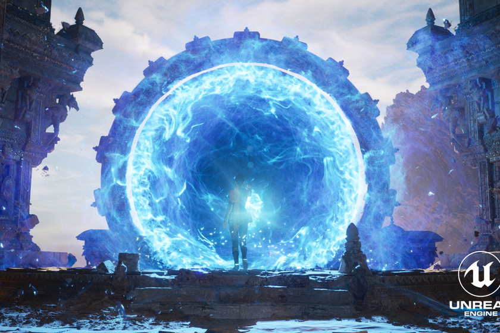

Nanite es un sistema de geometría micro poligonal de forma virtual que permite crear juegos con miles de detalles geométricos. Este sistema de Mesh Rendering, permite cargar literalmente cientos de millones de polígonos en escena sin mermar la carga. Gracias a esta función, dejaremos de bakear cada uno de los detalles y ya no tendremos que crear manualmente LODs.
Esta herramienta nos va a permitir importar todo tipo de materiales formados por millones de polígonos y colocarlos las veces que sean necesarias sin pérdida de calidad. Esto permite realizar un enorme salto gráfico, ya que nos ofrece la posibilidad de meter modelos escaneados del mundo real sin un coste de rendimiento importante.
Detrás de esta tecnología se encuentran avances en el cómputo de las tarjetas gráficas más modernas. Por lo que uno de los requisitos para disfrutar de esta tecnología es disponer de una gráfica con arquitectura Nvidia Maxwell (Serie 7XX) o AMD GCN (Serie 4XX) en adelante.
Para acceder a Nanite, basta con desplegar el menú de opciones en el content browser y acceder a la última opción. Una vez dentro del Quixel Content, basta con elegir un elemento que se quiera integrar y arrastrarlo dentro del motor.
Tras terminar el proceso de descarga, Unreal Engine 5, crea la jerarquía de carpetas y lo incluye dentro de la escena. Hay varias opciones de personalización para la descarga de elementos dentro de Quixel Content, pero gracias a la tecnología de Nanite, se pueden descargar las mallas con la máxima calidad, y que automáticamente el motor gráfico genere los niveles de calidad apropiados para la escena en cada momento de ejecución con la facilidad de configuración de unas pocas opciones. No hace falta que te pongas límites ya que el propio sistema se encarga de optimizar a tiempo real la cantidad de polígonos del modelo, aumentando o disminuyendo dependiendo de si está más cerca o lejos de la pantalla.
Lumen es un sistema de iluminación dinámica de nueva generación. La principal novedad, es que es un híbrido entre el sistema tradicional de iluminación voxel y raytracing, pero sin el costoso cálculo computacional de esta última tecnología. Con Lumen, puedes crear escenas dinámicas y creíbles en las que la iluminación indirecta se adapta sobre la marcha a los cambios de la iluminación directa o de la geometría. Esta herramienta de iluminación global permite cambiar el ángulo del sol dependiendo de la hora del día con solo encender una linterna o abrir una puerta. Te ofrece una alta calidad visual, sin influir gravemente en el rendimiento mientras facilita y simplifica el desarrollo. A partir de ahora, ya no es necesario crear UVs de mapas de luz, se podrá editar y crear luces dentro del propio Editor de Unreal y ver la misma iluminación final que cuando el juego se ejecuta en cualquier tipo de plataforma